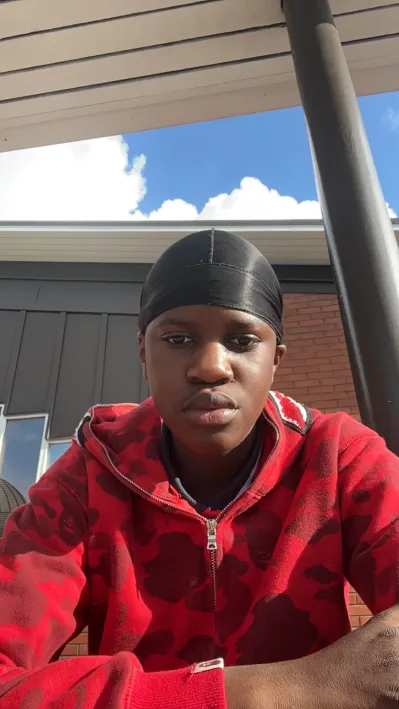

Tieto ja viestintä alan opiskelija.
Pehtorinkatu 2j 36 jobeabdalah08@gmail.com
Tähän mennessä olen valmistunut peruskoulusta ja olen ensimmäisellä vuodella opiskelijana
Olen ollut TET- työharjoittelussa UUNI-Pizzeriassa ja S-marketissa. Uuni pizzeriassa palvelin asiakkaita ja tiskasin. Kun taas S-marketissa hyllytin ja ohjeistin asiakkaita löytämään tavaroita
Suomi - Täydellinen Englanti - Hyvä Ruotsi -Alkeet
Olen kaarinasta kotoisin opiskelija, jolta löytyy kiinnostusta koodaamisesta. Vapaa-ajalla tykkään käydä salilla tai ulkoilla kavereitten kanssa. Olen oma-aloitteinen ja ahkera persoona vaikka itse sanonkin